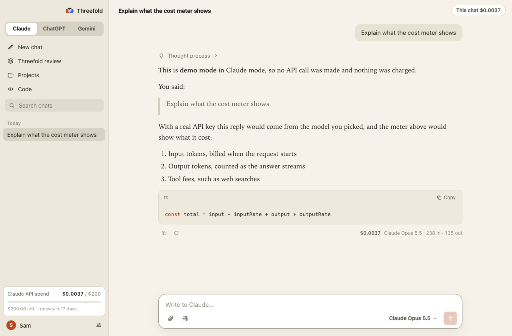
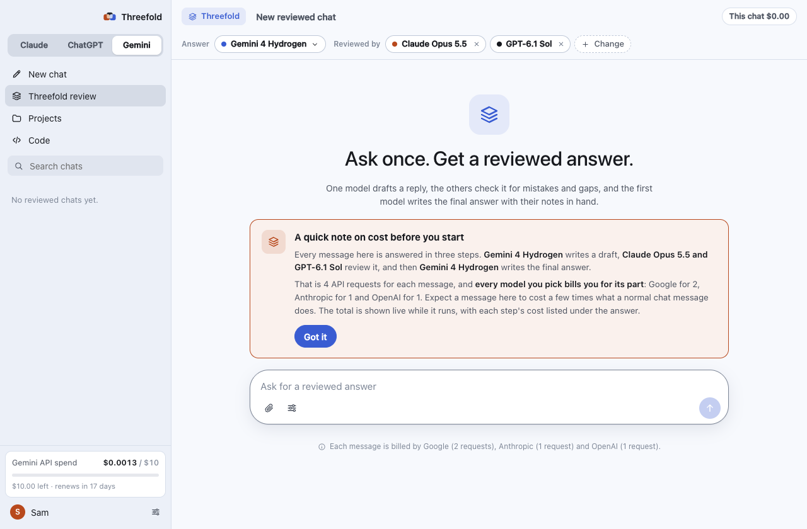
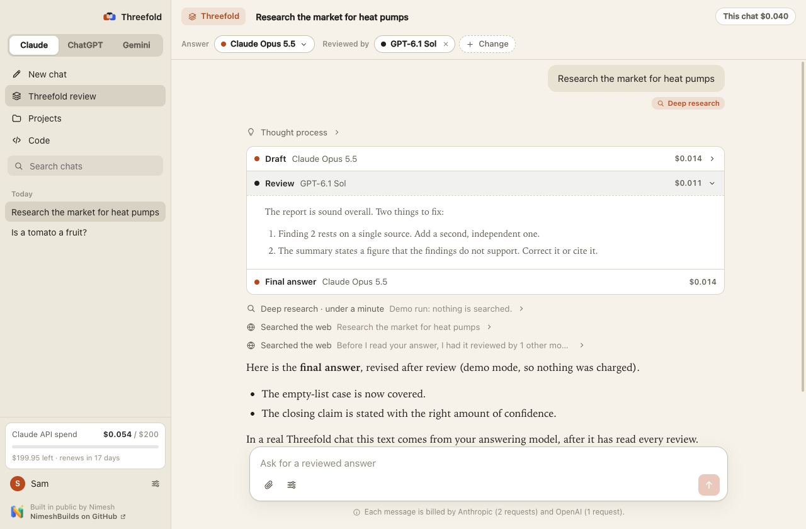

Claude
- Max
- $100 a month
- Ultra
- $200 a month
- Team
- pooled, up to $500
Expires each billing cycle. Anthropic's guide

A local app for macOS
Paid Claude, ChatGPT and Google AI plans now come with monthly API credits that their own apps cannot spend. Threefold gives those credits somewhere to go: a Claude mode, a ChatGPT mode and a Gemini mode on your Mac, with the cost of every message shown while it is being written.
No account, no server, no telemetry. The download is for Apple Silicon Macs on macOS 13 or later, and it is not signed by Apple: the quick start shows what that means, or how to build it yourself.

Screens from demo mode, which is why the replies describe themselves as canned.
Each company adds API credit to its paid plans. None of them lets you spend it in its own app.
Expires each billing cycle. Anthropic's guide
Expires each billing cycle. OpenAI's guide
Valid for 12 months, after a $5 prepayment. Google's guide
Amounts as published by each company in November 2026. They set these and can change them; check the linked guides.
Every mode has its own look, chat list and model picker, so you always know which API your message is going to.
Warm paper and a serif reading face. Runs on the Anthropic API.
Neutral and clean, with image generation. Runs on the OpenAI API.
Cool and rounded, with Google Search and image generation. Runs on the Gemini API.
Not included: voice, video generation, the official apps' connectors, and syncing chats back to the official apps.
Connect two or more providers and a fourth tab turns on. You choose who answers and who reviews, from every provider you have a key for. Every message then takes three steps.
Your answering model replies, as it would in a normal chat.
The other models read the draft and list what is wrong or missing. They run at the same time.
The answering model rewrites its reply with every review in hand. That is what you read.

Each step is a separate API request. The answering model is billed twice and every reviewer once, each by its own provider. So a message here costs a few times what a normal one does.
Threefold tells you this every time the tab opens, names each provider and how many requests it will get, and lists the cost of every step under the answer.
If a reviewer fails, the others are still used. If none comes back, you get the draft and are told it was not reviewed.
Switch it on for one message. The model plans its questions, searches widely, reads the sources and writes a report with citations. Each provider does this its own way, so Threefold uses each one's own route.
Claude at its highest practical effort with web search and page reading. Anthropic has no separate research endpoint, so this is the chat model working longer.
Your chosen model at its highest reasoning effort with uncapped web search, run in OpenAI's background mode so a long run survives a dropped connection.
Google's Deep Research agent. Google estimates one to three dollars for a typical run.
In Threefold review, deep research makes the draft a full research run. The reviewers may search the web themselves to check its claims and sources, and the answering model then rewrites the report with their findings.
A run takes several minutes and can cost a few dollars across the providers involved. The app says so before you send, and the running cost is on screen the whole time.

Estimates are marked with "≈". Threefold counts what it spends itself; it cannot read your real balance, and a few fees are not counted. The details are written down, not hidden.

Two ways to get Threefold onto your Mac: download the ready-made app, or build it yourself from the source. Both take a few minutes.
Option A
Read this first: the app is not signed by Apple.
Threefold is not signed with an Apple Developer ID and has not been notarized, so Apple has not checked this build. macOS blocks apps like that by default, and you have to allow it yourself, once, in System Settings (steps 3 to 5). Apple advises against doing this for software you do not trust. If you would rather not, use Option B: the source is public, and an app built on your own Mac opens without the warning.
Download the ZIP (about 290 MB).
Download Threefold-mac-arm64.zip
The checksum and older versions are on the releases page.
Double-click the ZIP in your Downloads folder, then drag Threefold into Applications.
Double-click Threefold. macOS stops it and says Apple could not verify the app. Click Done. Do not choose Move to Trash.
Open System Settings → Privacy & Security and scroll down to Security. Next to the note that Threefold was blocked, click Open Anyway. The button is only there for about an hour after step 3.
Confirm with Open Anyway and enter your Mac login password. Threefold opens, and from now on a normal double-click is enough.
This removes the "downloaded from the internet" flag from the app, so macOS skips the check. Run it after step 2, then open Threefold normally.
xattr -dr com.apple.quarantine /Applications/Threefold.appThese are Apple's own steps for opening an app from an unknown developer. On an Intel Mac, use Option B. After you replace the app with a newer version, macOS may ask once for your login password so Threefold can read its saved keys; choose Always Allow.
Option B
Install the tools you are missing. Git comes with Apple's command line tools; Node.js is at nodejs.org. Then install pnpm:
xcode-select --installnpm install -g pnpm@10Get the source and go into its folder.
git clone https://github.com/nimeshbuilds/threefoldcd threefoldInstall what it depends on. This downloads Electron, so give it a few minutes.
pnpm installRun it. This starts Threefold straight from the source, with no macOS warning.
pnpm dev
Optional: build a real app you can keep in Applications. It lands in
dist/mac-arm64/Threefold.app; drag it into Applications.
pnpm dist
Want to look around before connecting anything? pnpm demo starts the app with canned replies,
no keys and no network calls.
Either way, the first launch opens a short wizard that connects your API keys. That part is next.
A short wizard walks you through it on first launch. Connect one, two or all three.
In the official app's billing settings (or Google AI Studio), link your plan to an API account. This is where the monthly credit lands.
On that provider's developer console, in the same account. It takes a minute.
The key is checked with a free request and stored encrypted on your Mac. You never type it anywhere else.
No plan credits? It still works. Usage is then billed to the payment method on your API account.
Ask each company for an export of your data, then hand the ZIP to Threefold. Your old chats appear in that mode's sidebar and can be continued through the API.
On a Team or Enterprise plan, export works only if an owner has allowed members to export their data.
Business and Enterprise workspaces do not offer this export.
Google exports an activity log, not conversations, so Threefold groups prompts made within half an hour of each other into one chat. Only activity Gemini was saving is included, and work or school accounts may not allow the export.
Open Settings → Import history. Under that provider's heading click Choose export file… and select the ZIP. The first-launch wizard offers the same step. Importing the same export again adds only what is new.
An export is a snapshot. Pictures and uploaded files are not part of it, and chats you continue in Threefold do not sync back to the official apps. Reading old chats is free; continuing one sends its history to the API and is billed like any other message.
Requests go from your Mac straight to Anthropic, OpenAI and Google. There is no Threefold server, account or telemetry.
API keys are encrypted with a key held in the macOS Keychain. Chats, projects and memory are plain files in a folder you can back up.
The coding agents read only the folder you choose and ask before every file edit and every command.
Each provider's own API data policy still applies to what you send it. In a Threefold review, your message and the draft go to every reviewer's provider. Deep research runs on ChatGPT and Gemini are stored by that provider, because their long-running modes require it.
Threefold is an early preview, built in public. Version 0.4.0 is available as a download for Apple Silicon Macs and as source. Its interface, cost tracking, importers and review engine are covered by automated tests; testing against the live APIs is in progress. The download is not signed or notarized by Apple.